A floating sentinel on a bridge pier. Every 15 minutes it reads the water; the moment a spill passes, it turns its beacon red, sends an SMS and bottles a sample for the lab.
Tankers pull up to the bank, a hose goes into the river, and they are gone before sunrise. Families downstream drink from the town intake; farmers irrigate with the same water. Nobody saw it, because rivers are checked about once a month, and spills last hours.
Every 15 minutes: pH, dissolved solids, turbidity and water temperature; rain, light and humidity; and vapour from the sample bottle. 2,880 readings a month instead of one.
On board, no cloud. A Raspberry Pi compares each reading with hard limits and with what is normal for that hour of the day, and names the pattern: industrial, acidic, runoff or solvent.
In seconds. A red beacon for anyone on the bank, an SMS to the water-works and the board, and one bottle of the spill for the lab, so the right water gets tested.
Pick a water, or move the sliders. This runs our designed decision rules in your browser: the same limits and patterns we put on the Raspberry Pi.
The full-size R3 (66 parts) and the 1:5 LIVE model we bring to the booth (40 bodies, in its assembled position). Drag to rotate, scroll or pinch to zoom.
A two-inch pole is clamped to a bridge pier, and eight rollers let the float rise and fall two metres with the water. The current turns it like a weathervane, and for service the carriage gate simply opens.
Real pH, dissolved-solids, turbidity and temperature probes at full size dip into a dish of water under the float. A Raspberry Pi in the base. Rain, light and humidity on the column, an MQ-3 over the sample bottle, the beacon on the mast. To show a different river, we swap the dish.
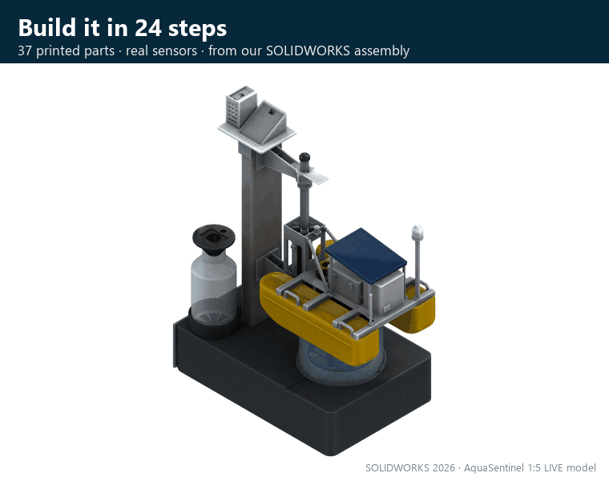
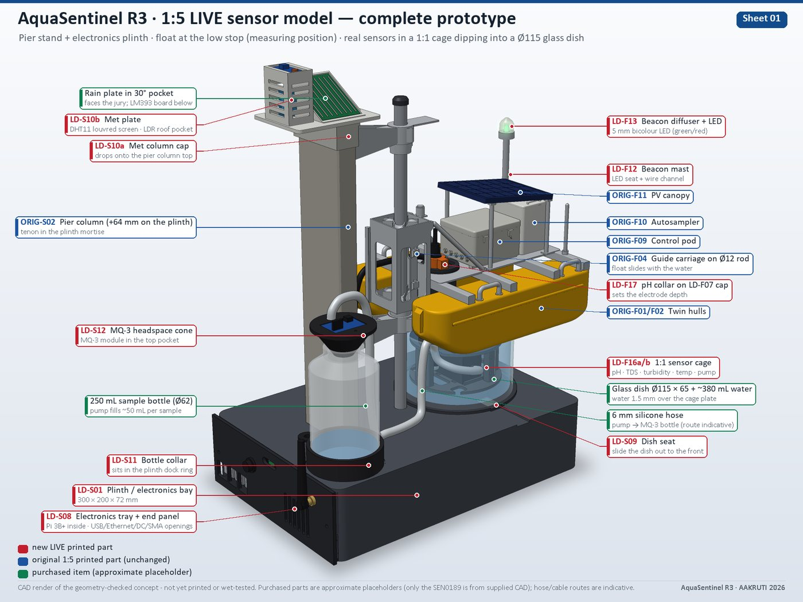
Thirteen boards modelled as native SOLIDWORKS parts, assembled on the printed tray, checked for clashes (two found, two fixed, now zero) and documented in drawing AS-LIVE-ELEC-01. Hover a pin on the header to see what it does.
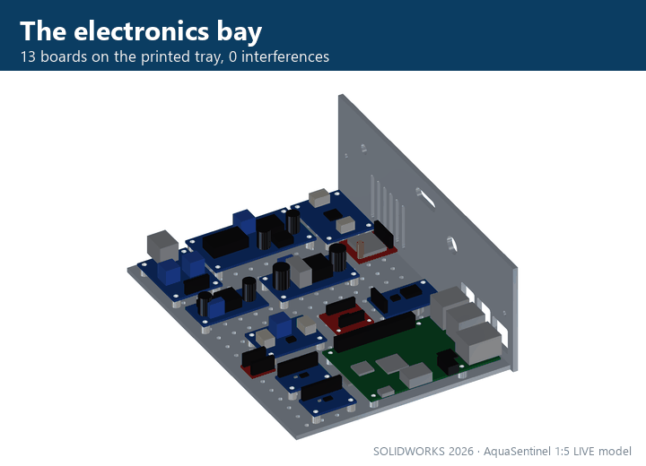
The R3 geometry comes from our own parametric model; it was assembled, checked and simulated in SOLIDWORKS, with a material and a part number on every part, a Pack and Go, a drawing set and a STEP file for every part.
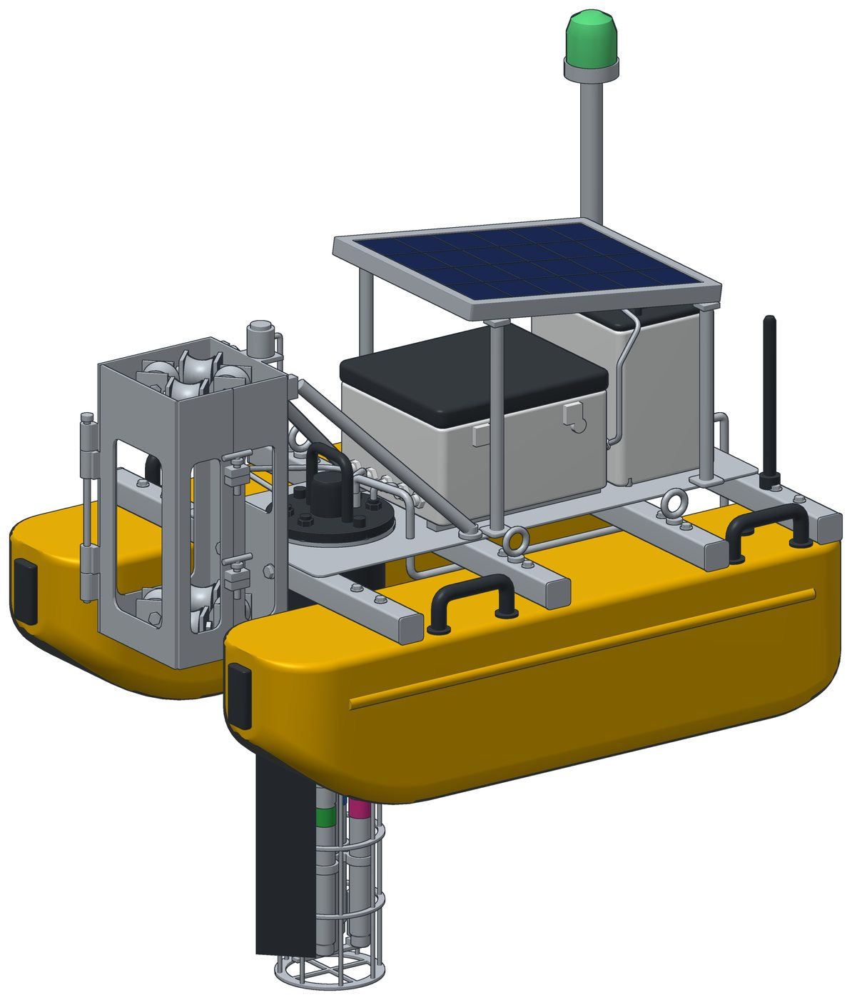
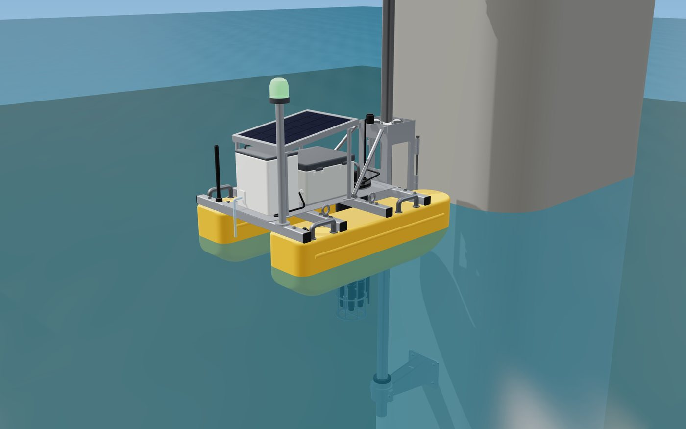
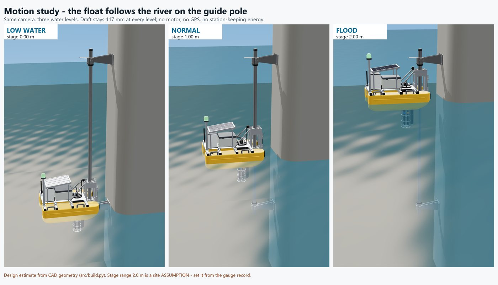
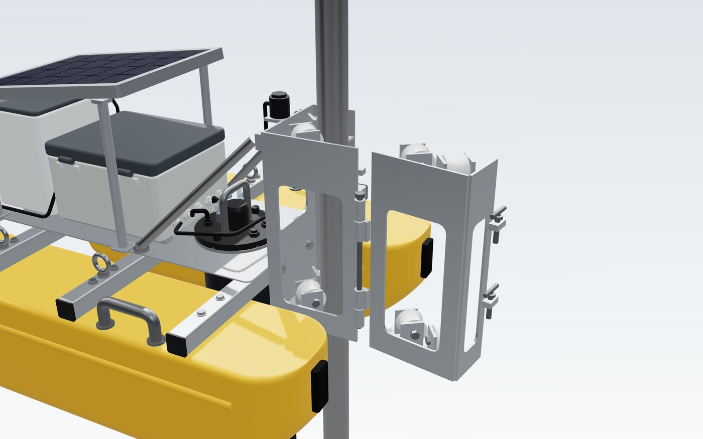
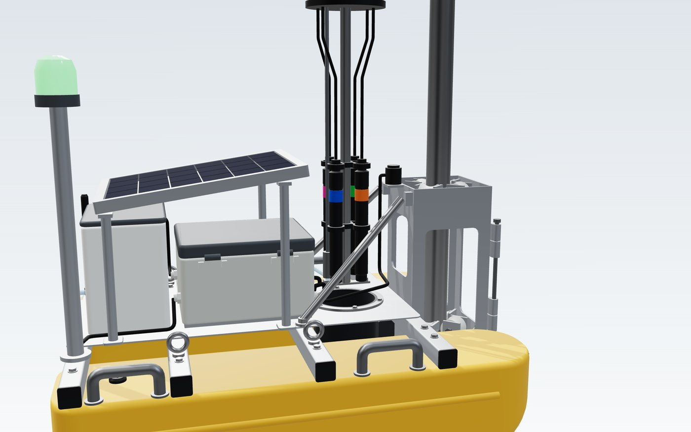
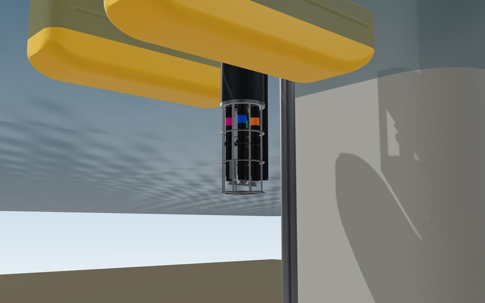
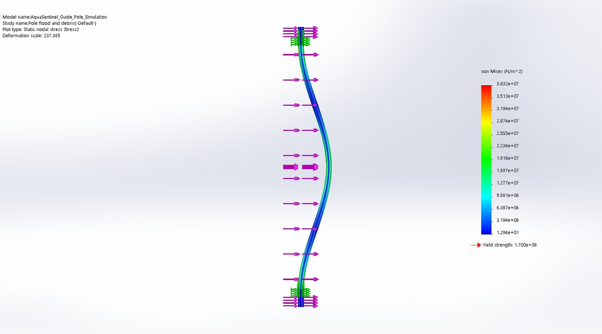
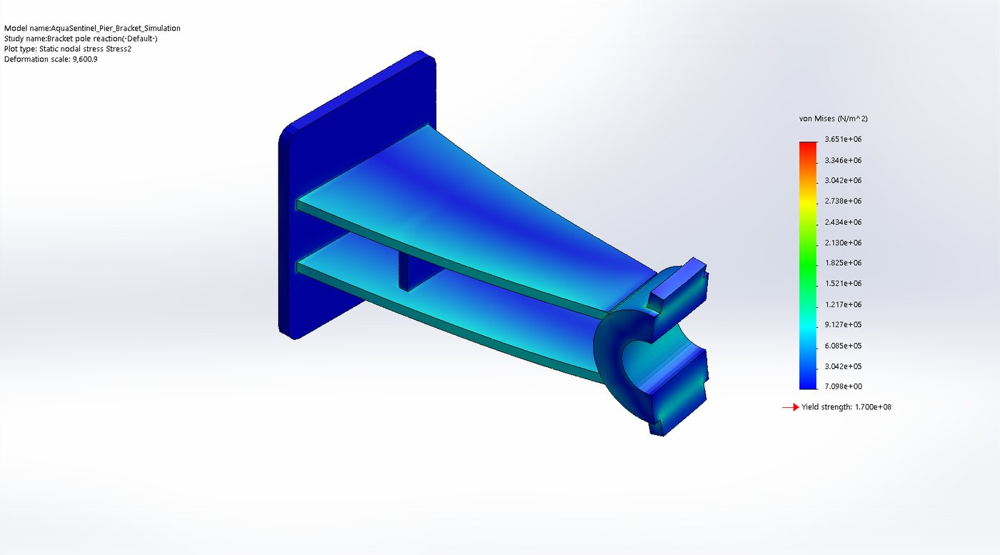
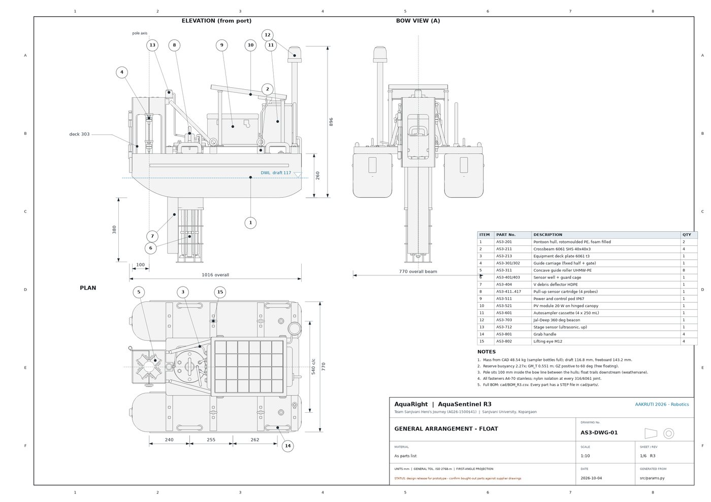
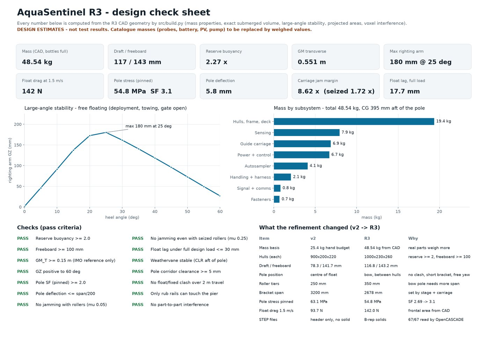
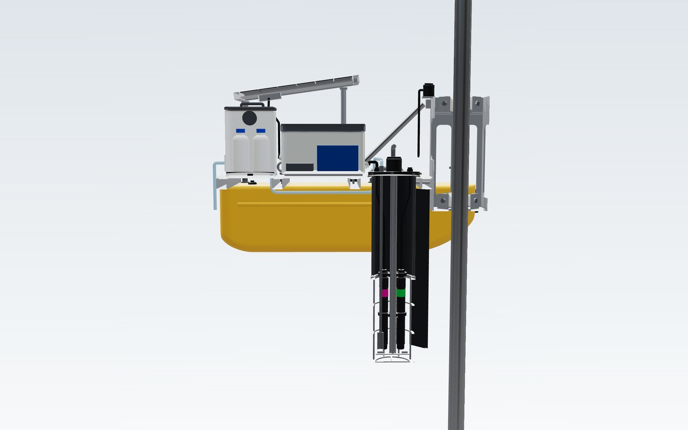
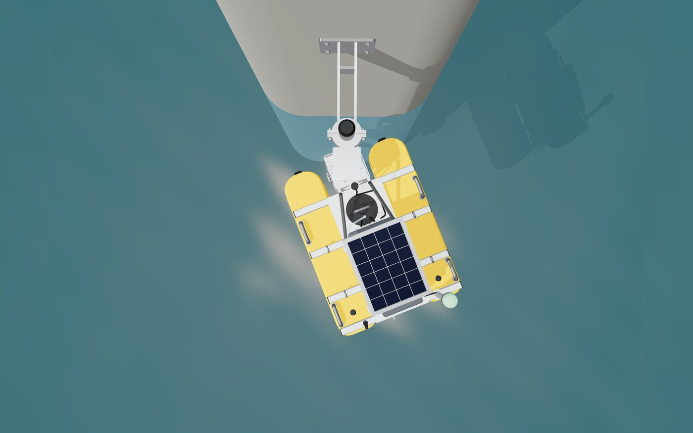
CPCB data, 296 sites, the Godavari at Kopargaon.
Three design generations, a 66-part R3, 14 checks, 2 simulations.
Into the India Geo Finale.
Real sensors, printed model, cost down to ≈ ₹48k.
Live booth demo and the 7-minute pitch.
2 m travel and roller friction at full size; 30 days at Kopargaon once permits are in place.
CAD, calculations and FEA; the logic flags 4 of 4 simulated spills.
37 printed parts; real sensors at 1:1 in a dish.
The Pi reads, decides, acts: beacon, pump, SMS; wet test with 4 samples.
Full-size float on a 2-inch pole.
30 days; alerts checked against lab samples.
Every figure on this page is a design estimate unless it says otherwise.
Narrated by our team.
Sanjivani University, Kopargaon, Maharashtra · AAKRUTI Innovation Competition 2026 by Dassault Systèmes · Team AG26-1500$41